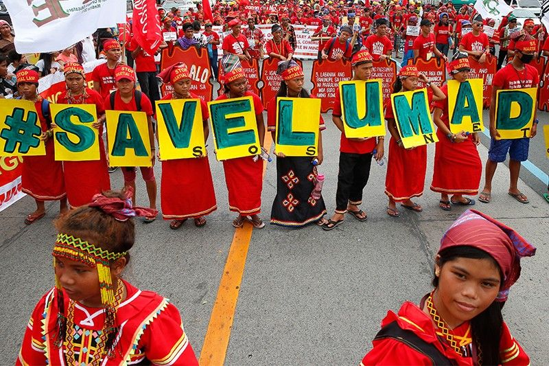
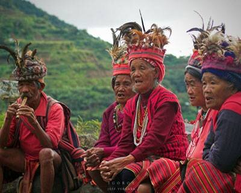
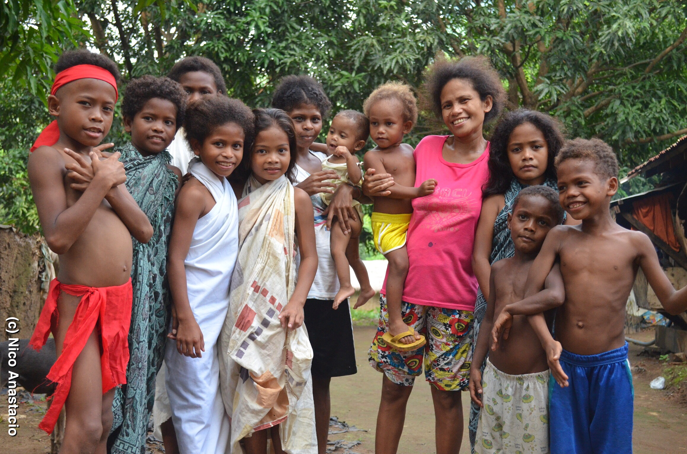

Indigenous Communities & Challenges
Filter by Challenge Type
Lumad Peoples

Location
Mindanao, Philippines
Population
~2 million
Language Groups
18+ languages
Land Rights
Cultural Preservation
Health Disparities
Key Challenges
- Forced displacement due to armed conflict
- Militarization of ancestral domains
- School closures affecting indigenous education
- Large-scale mining and logging operations
Cultural Highlights
- Diverse ethnolinguistic groups with unique traditions
- Rich oral literature and epic poems
- Sustainable agricultural practices
- Traditional governance systems
Igorot Peoples

Location
Cordillera, Philippines
Population
~1.5 million
Main Groups
Bontoc, Kankanaey, Ibaloi, Ifugao
Land Rights
Cultural Preservation
Climate Change
Key Challenges
- Mining threats to watersheds and rice terraces
- Commercialization of cultural heritage
- Loss of traditional farming knowledge
- Land conversion for commercial use
Cultural Highlights
- World-famous rice terraces (UNESCO site)
- Traditional woven textiles and tattoos
- Complex irrigation systems
- Unique burial customs and rituals
Aeta People

Location
Luzon, Philippines
Population
~50,000-60,000
Ancestry
Among earliest inhabitants
Land Rights
Health Disparities
Climate Change
Key Challenges
- Displacement after Mt. Pinatubo eruption
- High infant mortality and malnutrition
- Limited access to healthcare
- Discrimination and stereotyping
Cultural Highlights
- Traditional hunter-gatherer lifestyle
- Expertise in jungle survival
- Rich oral traditions and herbal medicine
- Distinct musical traditions
Yanomami People

Location
Amazon Rainforest
Population
~35,000
Countries
Brazil & Venezuela
Land Rights
Health Disparities
Key Challenges
- Illegal gold mining on their lands
- Mercury poisoning from mining
- Malaria and other disease outbreaks
- Deforestation and habitat loss
Cultural Highlights
- Traditional semi-nomadic lifestyle
- Shamanic traditions and spiritual practices
- Communal yano (roundhouse) dwellings
- Complex kinship systems